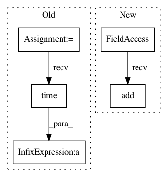

c5a5a5de8975985c54ea49718f6473c42605379b,python/ray/serve/backend_worker.py,RayServeWorker,invoke_single,#RayServeWorker#Any#,116
Before Change
async def invoke_single(self, request_item):
args, kwargs, is_web_context = parse_request_item(request_item)
serve_context.web = is_web_context
start_timestamp = time.time()
method_to_call = self.get_runner_method(request_item)
args = args if self.has_positional_args(method_to_call) else []
method_to_call = ensure_async(method_to_call)
try:
result = await method_to_call(*args, **kwargs)
except Exception as e:
result = wrap_to_ray_error(e)
self.error_counter += 1
self.latency_list.append(time.time() - start_timestamp)
return result
async def invoke_batch(self, request_item_list):
After Change
method_to_call = ensure_async(method_to_call)
try:
result = await method_to_call(*args, **kwargs)
self.request_counter.add()
except Exception as e:
result = wrap_to_ray_error(e)
self.error_counter.add()
In pattern: SUPERPATTERN
Frequency: 4
Non-data size: 5
Instances
Project Name: ray-project/ray
Commit Name: c5a5a5de8975985c54ea49718f6473c42605379b
Time: 2020-05-06
Author: xmo@berkeley.edu
File Name: python/ray/serve/backend_worker.py
Class Name: RayServeWorker
Method Name: invoke_single
Project Name: home-assistant/home-assistant
Commit Name: a2e45b8fdde315b756691b4ae573ad55f55dc002
Time: 2016-07-02
Author: rhooper@toybox.ca
File Name: tests/components/test_recorder.py
Class Name: TestRecorder
Method Name: _add_test_events
Project Name: ray-project/ray
Commit Name: c5a5a5de8975985c54ea49718f6473c42605379b
Time: 2020-05-06
Author: xmo@berkeley.edu
File Name: python/ray/serve/backend_worker.py
Class Name: RayServeWorker
Method Name: invoke_batch
Project Name: home-assistant/home-assistant
Commit Name: a2e45b8fdde315b756691b4ae573ad55f55dc002
Time: 2016-07-02
Author: rhooper@toybox.ca
File Name: tests/components/test_recorder.py
Class Name: TestRecorder
Method Name: _add_test_states